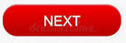

Couleur
Couleur (aperçu)
La couleur améliore la conception du contenu Web en rehaussant son attrait esthétique, sa convivialité et son accessibilité. Aussi utile soit-elle, la couleur ne doit pas être la seule façon de transmettre l’information. La couleur transmet l’information lorsqu’elle met l’accent sur le texte, fait la distinction entre les éléments visuels et distingue les éléments interactifs des éléments statiques. Les personnes daltoniennes, malvoyantes ou aveugles doivent se voir offrir un équivalent textuel de l’information transmise par couleur. Il en va de même pour ceux qui utilisent uniquement du texte, des couleurs limitées ou des affichages monochromes.
Pour répondre aux besoins de tous, assurez-vous que la couleur n’est pas la seule façon de transmettre l’information. Assurez-vous également que les utilisateurs peuvent personnaliser la conception de vos CSS en ce qui a trait aux couleurs afin qu’ils puissent compenser celles dont les contrastes sont extrêmement vifs ou faibles au moyen du système d’exploitation ou du navigateur en appliquant une feuille de style personnalisée.
Information transmise au moyen de couleurs
Les renseignements transmis par des couleurs doivent avoir un équivalent textuel exact.
Mauvais exemple : Données de tableau en couleur sans étiquette de texte
Dans ce mauvais exemple, la couleur à elle seule communique la gravité. Il n’y a pas d’étiquette de texte. Les valeurs de gravité sont définies sous le tableau au moyen d’une légende ou d’une clé des couleurs.

Rouge = Élevé, Jaune = Moyen, Vert = Faible


Bon exemple : Données de tableau en couleur avec étiquettes de texte
Le tableau utilise des couleurs pour transmettre l’information avec des étiquettes textuelles qui assurent que le sens est perceptible.

Mauvais exemple : Champ d’erreur indiqué seulement par une couleur
Dans ce mauvais exemple, le texte en rouge est la seule indication d’une erreur. Le rouge et le noir sont pratiquement indiscernables pour certains utilisateurs atteints de cécité aux couleurs.
De plus, le texte rouge ne satisfait pas à l’exigence minimale de rapport de contraste de 4,5:1 des WCAG (rouge de base, ou #FF000, a un rapport de contraste de 4:1 par rapport à un fond blanc, #FFFFFF).
Enfin, sans balisage sémantique supplémentaire, il serait impossible pour les utilisateurs de lecteurs d’écran de distinguer le champ problématique.
Veuillez remplir les champs indiqués en rouge
Bon exemple : Erreur de champ du formulaire surlignée avec texte explicatif
Dans cet exemple, la validation met en évidence une erreur avec un fond coloré et un texte explicatif « Erreur 1 : Ce champ est obligatoire. »

Cet exemple est tiré du Guide de la BOEW
Mauvais exemple : Seule la couleur communique l’information
Dans le mauvais exemple ci-dessous, la légende utilise uniquement la couleur pour différencier les colonnes de l’histogramme.

Mauvais exemple : Information codée par couleur non communiquée par un texte de remplacement
Dans le mauvais exemple ci-dessous, la légende utilise la couleur et les motifs pour différencier les colonnes de l’histogramme. Toutefois, il n’existe pas de texte de remplacement pour les utilisateurs de lecteurs d’écran.

Bon exemple : Information à code de couleur communiquée au moyen d’un texte de remplacement.
Dans le bon exemple ci-dessous, la légende utilise la couleur et les motifs pour différencier les colonnes de l’histogramme. Le texte de remplacement décrit adéquatement les données véhiculées dans le diagramme.
Distinguer les liens et les contrôles du texte
Les utilisateurs malvoyants et daltoniens ont besoin de distinguer les liens du texte voisin. La façon la plus simple de le faire consiste à souligner le lien et à doter une commande d’une bordure.
Lorsqu’un lien est identifié uniquement par une couleur (ce qui signifie que le soulignement a été supprimé), deux conditions doivent être remplies:
- Contraste de 3:1 entre le corps du texte et le texte du lien.
- Un « indice visuel » (pas seulement un changement de couleur) qui apparaît lorsqu’on survole avec la souris ou qu’on le sélectionne avec le clavier. Pour ce faire, le plus souvent, le lien apparaît souligné lorsqu’on le survole ou qu’on le sélectionne, mais vous pouvez aussi ajouter une couleur d’arrière-plan, une bordure ou un contour.
Notez que cela pose problème uniquement lorsque le lien et le corps du texte apparaissent ensemble. Cela ne s’applique pas aux liens dans l’en-tête ou superposés dans un menu, où ils sont interprétés comme des liens par leur position sur la page.
Ces exigences s’ajoutent à l’exigence minimale de contraste de 4,5:1 entre le texte original et le fond. Il peut être difficile de trouver une couleur de lien qui présente un contraste de 3:1 avec le corps noir et un contraste de 4,5:1 avec un fond blanc. La technique G183 des WCAG énumère les valeurs de couleur qui satisfont aux critères de l’exemple 1.
Bon exemple: Texte de l’hyperlien souligné
Dans cet exemple, le texte de l’hyperlien se distingue du texte normal voisin par un soulignement.
Le Bureau de l’accessibilité des TI (BATI) demeure un fournisseur de technologies d’adaptation et un défenseur de l’inclusion des personnes handicapées en milieu de travail.
Bon exemple : Contraste élevé avec un effet visuel en cas de survol ou de sélection
Cet exemple évite un soulignement statique en:
- Utilisant le bleu (#3333FF) comme couleur de lien, qui offre
- un contraste de 3,1:1 par rapport au texte noir voisin (dépasse tout juste le minimum de 3:1);
- un contraste de 6,9:1 avec le blanc de fond (bien supérieur au minimum 4,5:1).
- En tant qu’indice visuel supplémentaire sur le survol ou à la sélection, le texte du lien est réglé avec un contraste de blanc très élevé (21:1) par rapport au fond noir.
Le Bureau de l’accessibilité des TI (BATI) demeure un fournisseur de technologies d’adaptation et un défenseur de l’inclusion des personnes handicapées en milieu de travail.
Résultats de l’application Colour Contrast Analyser


Après sélection à l’aide du clavier ou survol par le pointeur de la souris

Mauvais exemple : Information codée par couleur non communiquée par un texte de remplacement
Dans ce mauvais exemple, la couleur bleue du premier plan indique que les deux dernières icônes sont des boutons. Le bleu présente le contraste requis de 3:1 par rapport au noir du texte voisin, mais il n’a pas d’autre effet visuel en cas de survol ou de sélection.

Bon exemple : La bordure complète la couleur pour distinguer les boutons du texte de base
Dans ce bon exemple, l’apparition de bordures en cas de survol et de sélection indique que les deux dernières icônes sont des boutons.


Personnalisation de la couleur et du contraste de l’interface
Certains utilisateurs sensibles à la luminosité ou malvoyants s’attendent à pouvoir modifier les couleurs. Dans la mesure du possible, utilisez des fonctions et des contrôles natifs de HTML. Cela permet aux utilisateurs de personnaliser la couleur et le contraste de l’interface pour les composants visibles de l’interface utilisateur.
Bon exemple : Bouton avec CSS
Dans cet exemple, l’apparence du bouton est réglée avec les règles CSS, y compris les couleurs. Les valeurs peuvent facilement être remplacées par une feuille de style utilisateur personnalisée
Mauvais exemple : Bouton utilisant une image de texte
Lorsque les boutons utilisent une image de texte, les feuilles de style utilisateur ne peuvent pas personnaliser les propriétés du texte, notamment les couleurs d’avant et d’arrière-plan. En grossissant le texte, il est pixélisé et devient flou dans les images, ce qui diminue la lisibilité.
Ressources WCAG connexes
Ressources WCAG connexes
En Anglais seulement.
Critères de réussite
Techniques
- G18: Ensuring that contrast of at least 4.5:1 exists between text (and images of text) and background behind the text
- G145: Ensuring that a contrast ratio of at least 3:1 exists between text (and images of text) and background behind the text
- G182: Ensuring that additional visual cues are available when text color differences are used to convey information
- G183: Using a contrast ratio of 3:1 with surrounding text and providing additional visual cues on focus for links or controls where color alone is used to identify them
- G195: Using an author-supplied, highly visible focus indicator
- G207: Ensuring that a contrast ratio of 3:1 is provided for icons
- G209: Provide sufficient contrast at the boundaries between adjoining colours
Failures
- F13: Failure of Success Criterion 1.1.1 and 1.4.1 due to having a text alternative that does not include information that is conveyed by color differences in the image
- F73: Failure of Success Criterion 1.4.1 due to creating links that are not visually evident without color vision
- F81: Failure of Success Criterion 1.4.1 due to identifying required or error fields using color differences only